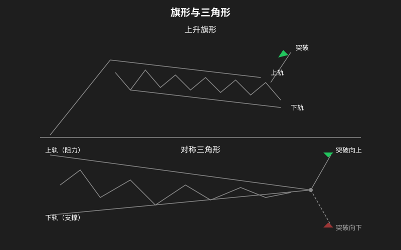

持续形态
持续形态（Continuation Patterns）表示当前趋势在短暂休整后将延续原有方向。与反转形态不同，持续形态是”中继站”而不是”终点站”。
本章介绍最常见的持续形态：旗形、三角形态、楔形、矩形/箱体、杯柄形态。

一、旗形 (Flag)
旗形是最可靠的持续形态之一，形态像一面飘扬的旗帜。旗形分为上升旗形和下降旗形。
上升旗形 (Bull Flag)
形态特征
- 旗杆 (Flagpole)：价格以近乎垂直的角度快速上涨（直线拉升）
- 旗帜 (Flag)：价格进入回调整理期，在两条向下倾斜的平行线之间波动
- 回调幅度通常不超过旗杆高度的 1/3
- 形态持续时间：1-4 周
成交量配合
- 旗杆阶段：成交量急剧放大
- 旗帜（整理）阶段：成交量逐步萎缩（缩量回调）
- 突破阶段：成交量再次放大
如何交易
- 价格突破旗帜上轨（下降通道的上沿）时买入
- 目标价 = 旗杆的长度 + 突破点价格
- 止损设在旗帜下轨下方
两个”不”
- 旗帜不能太短（至少 3 根 K 线才构成整理形态）
- 旗帜不能太规整——稍微有点毛刺的旗形更可靠，太完美的形态往往是陷阱
下降旗形 (Bear Flag)
下降旗形是上升旗形的镜像，出现在下跌趋势中。
形态特征
- 旗杆：价格快速下跌
- 旗帜：价格小幅反弹整理，在两条向上倾斜的平行线之间波动
- 反弹幅度通常不超过旗杆高度的 1/3
交易方式
- 价格跌破旗帜下轨时做空
- 目标价 = 旗杆的长度 + 突破点价格（向下计算）
- 止损设在旗帜上轨上方
二、三角形态 (Triangle)
三角形态是最常见的整理形态之一，分为上升三角形、下降三角形和对称三角形。
上升三角形 (Ascending Triangle)
形态特征
- 上边：水平阻力线（价格多次在同一价位受阻）
- 下边：向上倾斜的支撑线（每次回调的低点逐步抬高）
- 形态由两条线收敛组成
含义
上升三角形是看涨信号。水平阻力线代表空头防线，而向上抬高的低点说明多头力量在逐步增强，最终将突破阻力。
成交量配合
- 形态形成过程中：成交量总体递减
- 突破方向：向上放量突破（如果缩量突破，可能是假突破）
目标价位计算
- 测量三角形最宽处的垂直距离（第一条边的高度），记作 H
- 目标价 = 突破点 + H
下降三角形 (Descending Triangle)
形态特征
- 下边：水平支撑线（价格多次在同一价位获得支撑）
- 上边：向下倾斜的阻力线（每次反弹的高点越来越低）
- 形态由两条线收敛组成
含义
下降三角形是看跌信号。水平支撑线虽然暂时守住，但多头反弹力量越来越弱（每次高点降低），最终将跌破支撑。
成交量配合
- 形态形成过程中：成交量递减
- 向下破位：不需要放量也可以成立（下跌可以无量）
- 但如果破位后放量下跌，可信度更高
目标价位计算
目标价 = 突破点 - H（最宽处的垂直距离）
对称三角形 (Symmetrical Triangle)
形态特征
- 上边：向下倾斜的阻力线（高点越来越低）
- 下边：向上倾斜的支撑线（低点越来越高）
- 形态呈收敛状，两条线趋向于汇合
含义
对称三角形是中性形态，表示多空双方力量暂时均衡。突破方向决定后续走势：
- 在上升趋势中，倾向于向上突破
- 在下降趋势中，倾向于向下突破
成交量配合
- 形态形成过程中：成交量持续萎缩至最低水平
- 突破时：成交量必须明显放大
目标价位计算
与上升三角形相同：目标价 = 突破点 ± H
假突破识别
- 突破幅度小于 3% 且成交量不足 → 可能是假突破
- 突破后立即回到三角区内 → 确认假突破
三、楔形 (Wedge)
楔形与三角形态相似，区别在于楔形的两条边是同向倾斜的（都向上或都向下）。
上升楔形 (Rising Wedge)
- 两条边都向上倾斜，但上边比下边更平缓
- 在上升趋势末期出现时，往往是看跌信号（形态本身是看跌反转）
- 在下降趋势中出现的上升楔形则是持续看跌（反弹无力）
下降楔形 (Falling Wedge)
- 两条边都向下倾斜，但下边比上边更平缓
- 在下降趋势末期出现时，是看涨信号
- 在上升趋势中出现的下降楔形则是持续看涨（回调整理）
四、矩形/箱体 (Rectangle / Box Range)
形态特征
- 价格在两条平行水平线之间来回波动
- 上轨是水平阻力，下轨是水平支撑
- 形态像”箱体”或”跑道”
含义
矩形代表多空双方僵持不下，既无法突破也无力跌破。最终必然会朝某个方向突破。
- 向上突破 → 继续上涨（在上升趋势中）
- 向下破位 → 继续下跌（在下降趋势中）
如何交易
- 箱体震荡期间：在箱体下轨买入、上轨卖出（高抛低吸）
- 突破瞬间：按突破方向顺势跟随
- 箱体的宽度（持续时间）越长，突破后的目标空间越大
目标价位计算
- 目标价 = 箱体高度（上轨-下轨）的 1:1 测量
- 例如箱体高度 5 元，向上突破后目标 = 上轨 + 5 元
成交量特征
- 箱体内部：成交量逐渐萎缩
- 突破瞬间：成交量放大
- 如果是假突破，成交量通常不足
五、杯柄形态 (Cup and Handle)
杯柄形态是一种中长期看涨持续形态，时间跨度常为 2-6 个月甚至更长。
形态特征
- 杯子 (Cup)：
- 形状像圆底——“U”形而非”V”形
- 左边下跌，右边缓慢回升
- 左右两边的价格高点大致在同一水平线
- 深度不应超过前期涨幅的 1/3
- 手柄 (Handle)：
- 杯子右侧形成后，价格小幅回调
- 回调幅度通常是杯子涨幅的 10-15%
- 回调方向偏向向下倾斜的通道
- 持续时间约 1-4 周
成交量的关键特征
- 杯子左半部分（下跌段）：成交量较大
- 杯子底部（圆弧底）：成交量极度萎缩
- 杯子右半部分（上涨段）：成交量开始温和放大
- 手柄部分（回调段）：成交量明显萎缩
- 突破杯柄右沿时：成交量必须强劲放大
目标价位计算
- 测量杯子深度（杯底到杯口的高度），记作 H
- 目标价 = 杯柄突破点 + H
形态要点
- “U”形底比”V”形底更可靠
- 杯底应窄小，不宜过宽
- 手柄的下段应该是缩量回调
- 如果手柄呈向上倾斜，形态较弱
- 杯柄形态在周线图上更为可靠
持续形态总结
| 形态 | 趋势前提 | 突破方向 | 关键成交量信号 | 时间跨度 |
|---|---|---|---|---|
| 上升旗形 | 上涨趋势 | 向上 | 旗杆放量，旗帜缩量 | 1-4 周 |
| 下降旗形 | 下跌趋势 | 向下 | 旗杆放量，旗帜缩量 | 1-4 周 |
| 上升三角形 | 上涨趋势 | 向上 | 收敛期缩量，突破放量 | 数周-月 |
| 下降三角形 | 下跌趋势 | 向下 | 缩量收敛，破位确认 | 数周-月 |
| 对称三角形 | 中性 | 顺趋势 | 收敛期缩量至最低 | 数周-月 |
| 上升楔形 | 看跌 | 向下 | 缩量收敛 | 3-6 周 |
| 下降楔形 | 看涨 | 向上 | 缩量收敛 | 3-6 周 |
| 矩形/箱体 | 中性 | 顺趋势 | 缩量整理，放量突破 | 数周-数月 |
| 杯柄形态 | 上涨趋势 | 向上 | 杯底缩量，突破放量 | 2-6 个月 |
⚠️ 重要提醒：持续形态的”持续”只是概率上的偏向。任何时候都有可能演变为反转形态。务必设好止损。